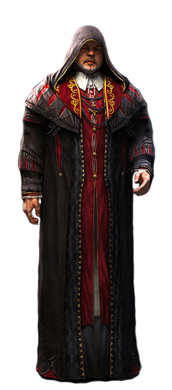

Ezio Auditore was born into the nobility on June 24, 1459, in the Italian city of Florence. Ezio's family were
the victims of an evil plot that ultimately took the lives of his father, Giovanni, and two brothers, Federico
and Petruccio. Of the Auditore men, only Ezio was able to escape because their capture occurred whilst Ezio
was running errands for his father. Through Ezio's help however, both his mother and younger sister
managed to survive, finding a way to escape the city with him.
According to the Florentine Guard's record books, Ezio appeared as a womanizer, with guards rarely able
to capture him.

Ezio, following his father Giovanni's final advice, finds his father's Assassin tools and flees the city
with his mother and sister to the safety of his uncle Mario's villa in the countryside. Mario assists Ezio
in discovering the people behind the conspiracy, the search leading Ezio from Florence, to
San Gimignano, Forlì, Venice, and eventually to Rome. As he identifies and assassinates more and more
political figures, Ezio also gains several allies, including Niccolò Machiavelli and Leonardo da Vinci,
the latter of whom helps Ezio improve his equipment using schematics found in Altaïr's Codex pages.
These allies train Ezio into an Assassin and guide him on his quest. Eventually, the conspiracy leads to
the mastermind of the plot: "the Spaniard" Rodrigo Borgia, Grand master of the Italian Templars.
He sought to find the Apple—a Piece of Eden—which lay in Florence. Ezio finds Borgia in
possession of the Apple that Altaïr had recovered centuries ago and learns that Borgia believes
himself to be "the Prophet" that will lead the Templars to the fabled "Vault". Ezio is able to
confront Borgia with the help of his allies and recover the Apple, but Borgia flees before he can
be killed. Ezio's allies reveal they are all Assassins and believe Ezio to be the true Prophet,
allowing him to join their ranks.